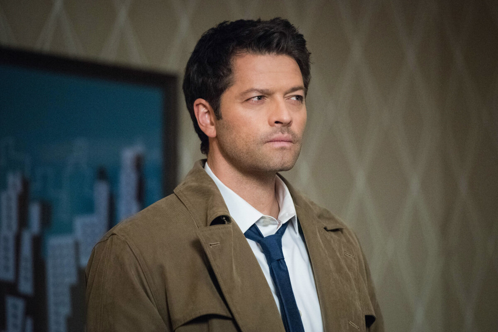
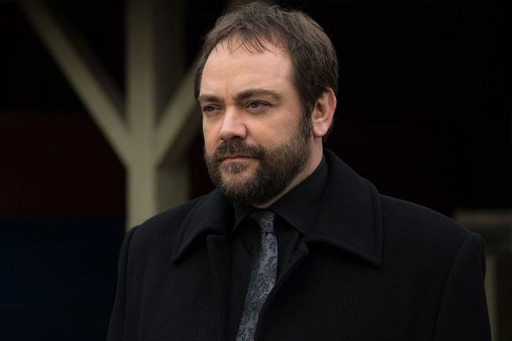
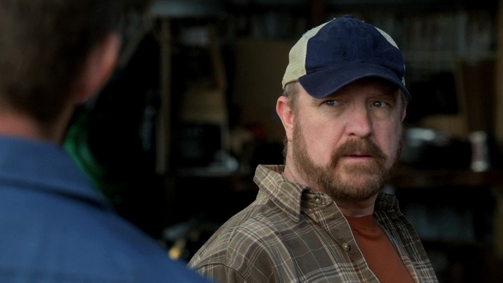

Кастиэль
Кастиэль — ангел, вернувший Дина из Ада на Землю и, впоследствии, ставший членом семьи Винчестеров.
На протяжении своей жизни с Винчестерами, его характер менялся под влияние событий, происходивших с ним. В конце концов он стал более человечным, научился испытывать эмоции и привязался к людям.
Кроули
Кроули — могущественный демон и Король перекрёстков, позднее и Король Ада.
При жизни Кроули носил имя Фергюс Родерик МакЛауд. Он родился в 1661 году в Канисбее, Шотландия. Его матерью была сильная ведьма Ровена.
Повзрослев, Фергус стал работать второразрядным портным.
Фергус продал свою душу демону за лишние три дюйма ниже пояса, так как хотел чтобы цифра была двузначной. Он умер в 1723 году в возрасте 62 лет и был похоронен сыном на захолустном кладбище в Шотландии.
После смерти Кроули отправился в Ад и стал демоном перекрёстка. Через какое-то время он возвысился и стал фактически правой рукой Лилит. Позже занял должность Короля перекрёстков, а после заточения Люцифера в клетку стал Королём ада.
Бобби Сингер
Роберт Стивен «Бобби» Сингер — охотник, эксперт демонологии и мифологии. «Второй отец» для Винчестеров. У Бобби имеется огромная библиотека со старыми книгами, из которых он черпает информацию. Являлся неким «диспетчером» охотников за сверхъестественным.
Бобби относится к Сэму и Дину как к своим сыновьям. Когда братьям нужна помощь, они обращаются к Бобби, который ищет информацию о сверхъестественном существе, на которое охотятся братья, штудируя древние и редкие книги из его огромной домашней библиотеки.
Главная страница